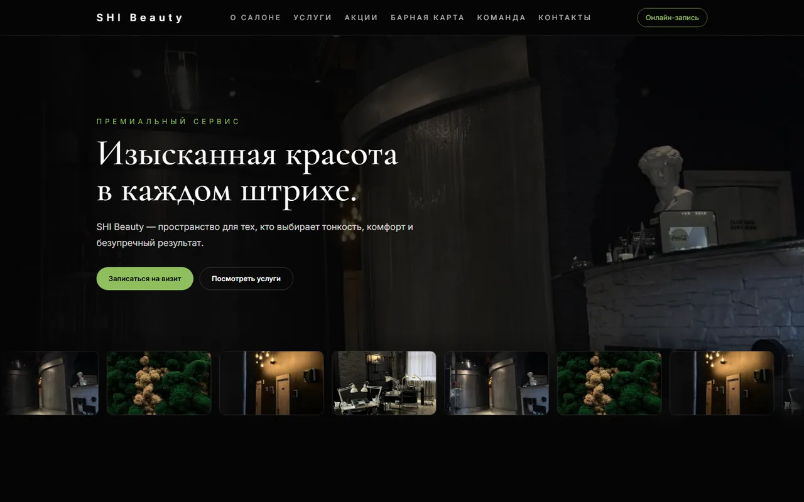
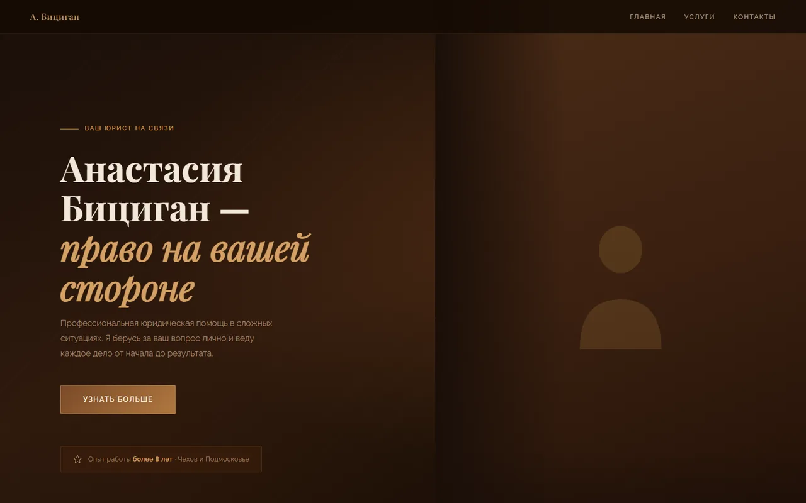
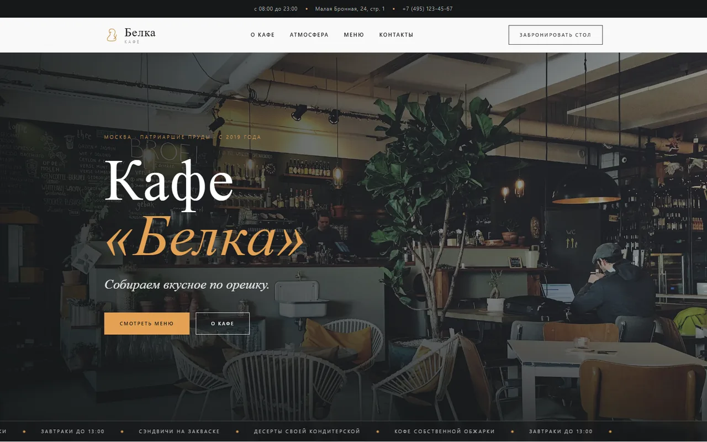

Сайты
Разработка с нуля: от структуры и текстов до вёрстки и запуска. Без конструкторов и шаблонов — код, который потом можно поддерживать.
Сайты · ИИ-агенты · SEO
Собираю сайты и встраиваю ИИ-агентов в процессы малого бизнеса. Заявки разбираются ночью, отчёты собираются сами, поиск приводит людей без бюджета на рекламу.
Обсудить задачуРазработка с нуля: от структуры и текстов до вёрстки и запуска. Без конструкторов и шаблонов — код, который потом можно поддерживать.
Встраиваю агентов туда, где у вас сейчас руками: обработка заявок, ответы клиентам, разбор документов, сводки по продажам. Агент берёт рутину, человек остаётся на решениях.
Техническая база, семантика, тексты. Цель одна — стабильный поток людей из поиска, за который не надо платить каждый месяц.
Процесс
Смотрю, как у вас всё устроено сейчас. Не что хочется автоматизировать, а где реально уходит время.
Показываю, что можно сделать, сколько это займёт и что вы с этого получите. Если выгоды нет — говорю прямо.
Делаю и показываю по частям. Вы видите промежуточный результат, а не финальный сюрприз.
Запускаем, я показываю, как этим пользоваться. Дальше вы работаете сами, я на связи.
Работы

Каталог услуг, цены и запись онлайн вместо разрозненных постов в соцсетях.
Смотреть сайт
Сайт с направлениями работы и контактами вместо визитки в мессенджере.
Смотреть сайт
Меню с фото и составом блюд вместо бумажных карточек на столах.
Смотреть сайтОбо мне
Работаю один, поэтому беру немного проектов и довожу каждый. Со мной вы говорите с тем, кто пишет код, а не с менеджером, который передаст.
Контакт
Отвечаю в течение дня. Первый разговор — бесплатно, и после него у вас в любом случае будет понимание, что делать.
Служебный слой
Ниже — рабочие правила бренда: логотип, палитра, типографика, сетка и тон голоса. Всё нарисовано живыми элементами страницы, а не картинками, поэтому то, что вы видите, и есть текущая версия системы.
Логотип
IR — это инициалы, но также инфракрасный диапазон: часть спектра, которую не видно, но которая делает всю работу. Монограмма набрана Onest 800 с трекингом −0,04em, между буквами вертикальная риска цветом infra высотой в 60% от высоты прописной.
На светлом · ink + infra
На тёмном · белый + infra-on-deep
Одноцветный чёрный
Одноцветный белый
Со всех сторон не меньше высоты буквы I монограммы. Красный пунктир — габарит логотипа, серый — граница охранного поля.
Полный логотип — 120px по ширине.
Монограмма отдельно — 24px.
Палитра
Paper и ink держат примерно 85% площади, steel и line — 12%, infra — не более 3%. Акцентом красится надзаголовок блока, активное состояние и тепловая полоса. Заливать красным крупные плашки нельзя.
paper
Фон страницы
ink
Основной текст
deep
Фон тёмных секций
steel
Вторичный текст
line
Линии и границы
infra
Акцент на светлом
infra-on-deep
Акцент на тёмном
Контраст, посчитанный по WCAG 2.1: ink на paper — 15,1:1, infra на paper — 6,1:1, steel на paper — 4,6:1. Все три проходят AA для обычного текста. Infra на deep даёт всего 2,7:1, поэтому на тёмном работает осветлённый infra-on-deep — 4,6:1. Line для текста не используется никогда, это цвет только для линий и заливок.
Типографика
Onest на заголовки, Golos Text на текст, JetBrains Mono на служебное. Все три нарисованы как кириллические, а не как латиница с приделанной русской частью: в премиум-строгом дешевизну выдаёт именно кириллица. Абзац не длиннее 68 знаков.
Работает там, где не видно
Расскажите, что нужно автоматизировать
Агент берёт рутину, человек остаётся на решениях
Смотрю, как у вас всё устроено сейчас. Не что хочется автоматизировать, а где реально уходит время. Показываю, что можно сделать, сколько это займёт и что вы с этого получите.
Техническая база, семантика, тексты. Цель одна — стабильный поток людей из поиска, за который не надо платить каждый месяц.
Сайты · ИИ-агенты · SEO
АБВГДЕЁЖЗИЙКЛМНОПРСТУФХЦЧШЩЪЫЬЭЮЯ
абвгдеёжзийклмнопрстуфхцчшщъыьэюя · 0123456789
Сетка и отступы
Контент — 1240px, гаттер 24px. Боковые поля 24px на мобильном и 64px от 1024px. Вертикальный ритм секций: 160px на десктопе, 64px на мобильном. Скругление 2px, теней нет: слои разделяются линией и цветом фона.
12 колонок на экранах от 640px, 6 — ниже.
Тон голоса
Ассеты
Логотипы — SVG, растровых версий нет и не нужно. Шрифты — woff2, разбитые на кириллицу и латиницу.
{kind=link}
{kind=link}
{kind=link}
{kind=link}
{kind=link}
{kind=link}